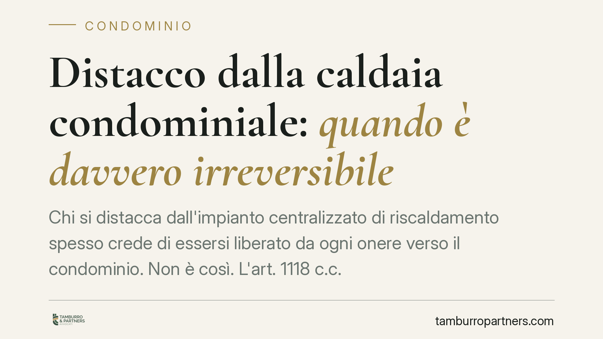

Distacco dalla caldaia condominiale: quando è davvero irreversibile
Chi si distacca dall'impianto centralizzato di riscaldamento spesso crede di essersi liberato da ogni onere verso il condominio. Non è così. L'art. 1118 c.c. e la giurisprudenza recente confermano che il distacco non cancella l'obbligo di partecipare alle spese straordinarie, salvo prova di un'impossibilità tecnica insuperabile.

Il fatto
Sono sempre più frequenti i condomini che decidono di rinunciare alla caldaia centralizzata e installare un impianto autonomo. La motivazione è quasi sempre economica: ridurre i consumi e non pagare più le bollette collettive.
Il problema nasce dopo. Molti ritengono che, staccandosi fisicamente dall'impianto comune, cessi automaticamente ogni contributo alle spese condominiali legate al riscaldamento. La realtà normativa è più articolata.
Inquadramento normativo
La disciplina è contenuta nell'art. 1118, comma 4, del codice civile. La norma consente al singolo condomino di rinunciare all'uso dell'impianto centralizzato di riscaldamento o condizionamento, ma pone due condizioni precise.
La prima: dal distacco non devono derivare notevoli squilibri di funzionamento dell'impianto né aggravi di spesa per gli altri condomini. La seconda, e decisiva: chi si distacca resta comunque obbligato a concorrere al pagamento delle sole spese per la manutenzione straordinaria dell'impianto e per la sua conservazione e messa a norma.
In altre parole, il distacco esonera dalle spese di gestione ordinaria e di consumo (il carburante, l'energia effettivamente usata), ma non da quelle straordinarie e conservative. La caldaia resta un bene comune di cui il distaccato continua a essere comproprietario per la sua quota.
La Cassazione, con orientamento consolidato negli anni più recenti, ha ribadito che l'unica ipotesi in cui il distacco produce l'esonero anche dalle spese straordinarie è quella dell'irreversibilità tecnica: quando l'unità immobiliare risulta materialmente e definitivamente separata dall'impianto, senza possibilità di ricollegamento. E questa condizione va dimostrata.
Cosa significa "distacco irreversibile"
Il punto centrale è probatorio. Non basta chiudere le valvole o dichiarare di non usare più il riscaldamento centralizzato.
L'irreversibilità va provata con una relazione tecnica redatta da un professionista abilitato, che attesti l'impossibilità di riconnessione all'impianto comune. Solo di fronte a un distacco fisico definitivo e certificato il condomino può sostenere di essere estraneo anche alle spese di conservazione.
Se il collegamento è invece semplicemente sospeso o disattivato, ma tecnicamente ripristinabile, l'obbligo contributivo per le spese straordinarie permane. La logica è chiara: finché resti comproprietario di un bene comune riutilizzabile, contribuisci alla sua conservazione.
Implicazioni pratiche
Per il condomino che si distacca: non conviene dare per scontato l'esonero totale. In assenza di prova dell'irreversibilità, l'amministratore continuerà a ripartire su di lui le spese straordinarie, e avrà ragione.
Per l'amministratore: prima di escludere un condomino dal riparto delle spese straordinarie occorre acquisire la relazione tecnica sull'irreversibilità. Un'esclusione avventata espone a contestazioni e a possibili responsabilità.
Per gli altri proprietari: il distacco altrui non deve tradursi in un aggravio dei loro costi né in squilibri di funzionamento dell'impianto. Se questo accade, il distacco può essere contestato.
Cosa fare in concreto
- Fai redigere una relazione tecnica da un professionista abilitato prima di procedere al distacco: deve attestare l'assenza di squilibri e di aggravi per gli altri condomini.
- Distingui le voci di spesa: pretendi dall'amministratore un rendiconto che separi consumi ordinari (dai quali sei esonerato) e spese straordinarie o di conservazione (che restano dovute).
- Non interrompere i pagamenti delle spese straordinarie sulla base del solo distacco: rischi decreti ingiuntivi condominiali.
- Verifica il regolamento condominiale: eventuali clausole contrattuali possono incidere sulle modalità di riparto.
- Documenta l'irreversibilità solo quando è reale e certificata: è l'unica via per un esonero pieno, e va dimostrata in caso di contenzioso.
Consigliamo di affrontare la questione preventivamente, in fase di progetto del distacco, e non a valle di una contestazione: la prova tecnica costruita per tempo è molto più solida di quella cercata dopo l'insorgere della lite.
Disclaimer
Contributo informativo a cura di Tamburro & Partners - Avv. Giuseppe Tamburro. Non costituisce parere legale.
Ogni condominio ha una storia a sé.
Se gestisci un'amministrazione e vuoi un confronto su una specifica questione condominiale, scrivi allo studio. Ti rispondiamo entro un giorno lavorativo.